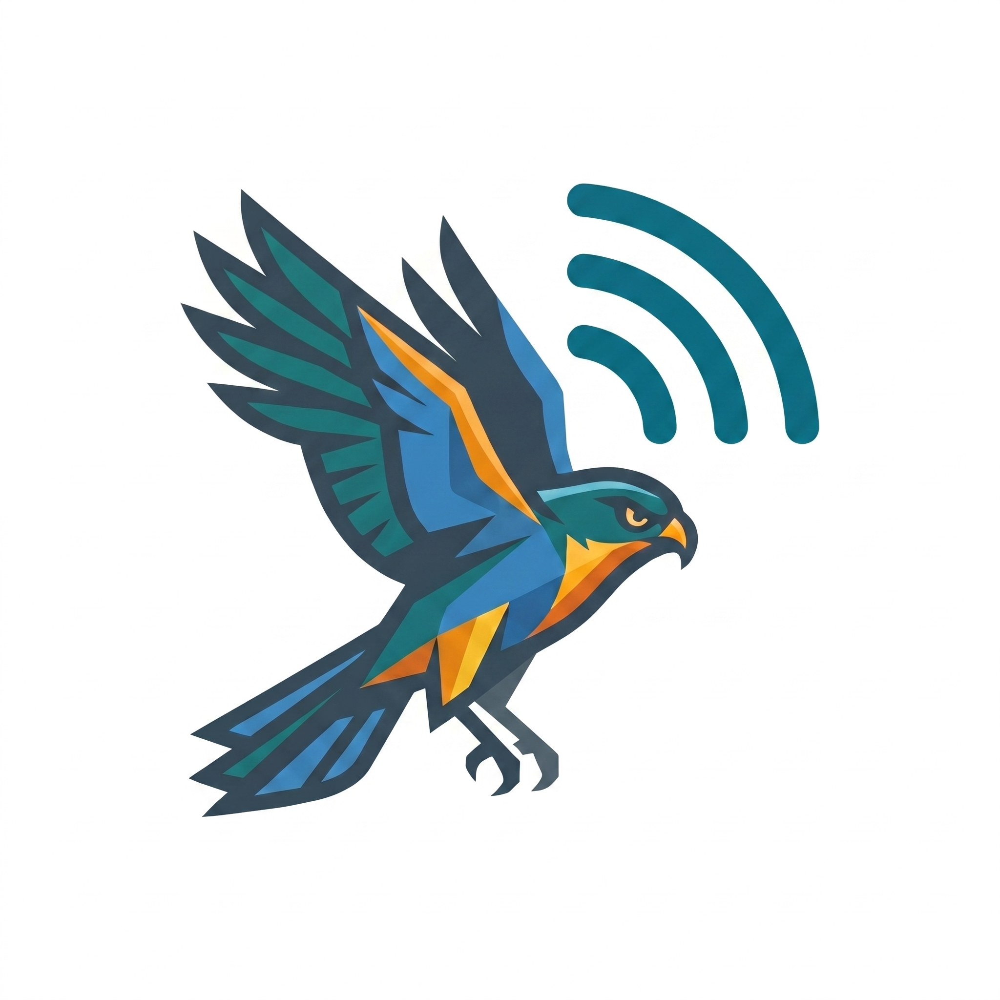

High-flying connectivity and smart tracking at your fingertips.
Sparrowhawk is designed to streamline your digital workflows, combining swift data processing with intuitive network awareness. Inspired by the agile precision of its namesake, the app ensures your data transitions are sharp, secure, and fully optimized.
Track processes and data pipelines seamlessly with zero overhead or resource bottlenecks.
Keep your active sessions organized with smart queueing systems and dynamic updates.
A clean UI built strictly around Material token guidelines for cross-platform ease.
Hi, I am the creator of Sparrowhawk. I focus on building lightweight, modern applications that bridge creative intuition with highly clean architectural frameworks. This project was developed utilizing a fluid "vibe coding" loop—allowing rapid visual prototyping while ensuring deterministic testing and strict code audits form its baseline foundation.